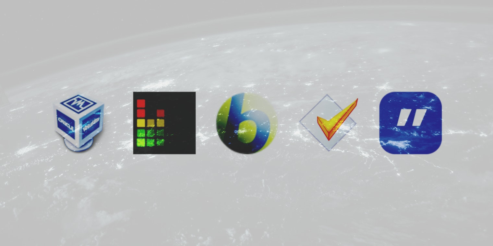
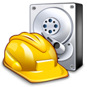
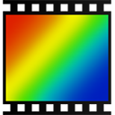
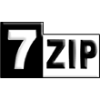
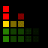
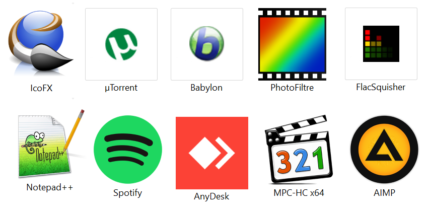
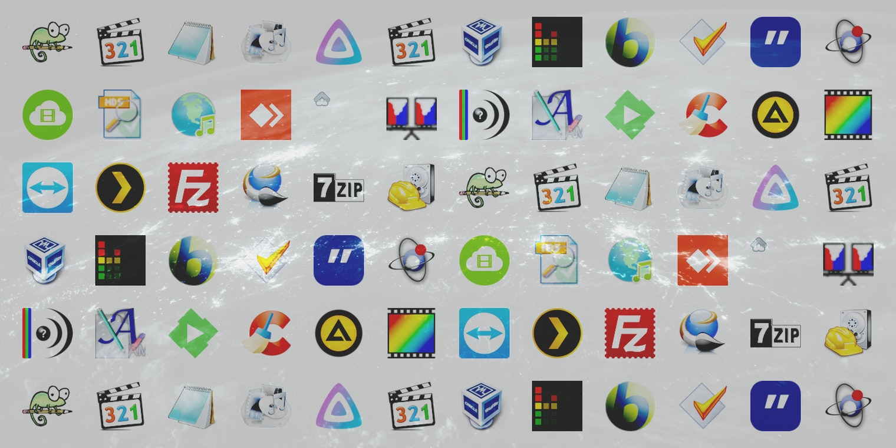

הכנתי רשימה של כל התוכנות שאני משתמש בהן

 PLEX להזרמת מדיה מהמחשב לסטרימר שמחובר לטלוויזיה
PLEX להזרמת מדיה מהמחשב לסטרימר שמחובר לטלוויזיה
DupDetector למציאת תמונות כפולות במחשב
 Recuva לשחזור קבצים במחשב שנמחקו לצמיתות
 Media Player Classic נגן מדיה לוידאו
Media Player Classic נגן מדיה לוידאו
AIMP נגן מדיה למוזיקה/אודיו
 Format Factory להמרת מדיה לסוגי קבצים שונים
Format Factory להמרת מדיה לסוגי קבצים שונים
MKVToolnix להטמעת כתוביות בוידאו והמרות שונות לקבצי MKV
 4k Video Downloader להורדת קליפים וסרטונים מיוטיוב
4k Video Downloader להורדת קליפים וסרטונים מיוטיוב
 4k YouTube to MP3 להורדת מוזיקה בפורמט MP3 מיוטיוב
4k YouTube to MP3 להורדת מוזיקה בפורמט MP3 מיוטיוב
Md5Checker להשוואת גיבוב (חתימה/hash) של קבצים שונים (הדרך הטובה ביותר לאיתור קבצים כפולים באמצעות hashing)
Winginx להרצת שרת PHP במחשב
MediaInfo להשגת מידע טכני לוידאו
 Advanced Renamer לשינוי שמות קבצים מרובים בכמה קליקים עפ כללים שאתם קובעים
Advanced Renamer לשינוי שמות קבצים מרובים בכמה קליקים עפ כללים שאתם קובעים
Emby תחליף לPLEX, ניתן להריץ את שניהם יחד, אני מריץ את פלקס בשבילי, בעוד שEmby מיועד לאחי, שניהם מוזרמים מהמחשב הנייח שלי
CCleaner להסרת תוכנות וניהול תוכנות שנפתחות באתחול
 PhotoFiltre תוכנה קלילה ובסיסית לעריכת תמונות
TeamViewer להתחברות למחשב אחד ממחשבים אחרים
AnyDesk תחליף לTeamViewer
FileZilla שרת FTP
IcoFX תוכנה לעריכה ויצירת אייקונים מתמונות
 7-Zip תחליף לwinrar, לחילוץ קבצים דחוסים zip/rar, תוכנה קלילה מאוד
Notepad++ לכתיבת קוד ומסמכים פשוטים
פנקס הרשימות / Notepad הכלי המובנה של ווינדוס, לכתיבת מסמכים פשוטים
Ditto לניהול זכרון לוח/מגש העתקות, התוכנה זוכרת כל דבר שאתם 'מעתיקים' אותם
Mp3tag לניהול תגיות וmetadata של מוזיקה/אודיו
Babylon בגרסת 8.0 המילון הרב שפתי הנח ביותר | התוכנה היחידה בכל הרשימה שהיא בתשלום, קל להשיג פריצה שלה.
 FlacSquisher התוכנה מיועדת להמרת קבצי FLAC לקבצי MP3 עם Lame | עוד שימוש שאני מצאתי לתוכנה זו העתקת קבצים ספיצפיים מתיקיה אחת לתיקיה אחרת (אני העתקתי למשל את כל קבצי הSRT שהם התרגומים מתיקית הסרטים לכונן גיבוי, זה שומר על מבנה ההיררכיה של התתי תיקיות ומעתיק רק את הקבצים שהגדרתם, ניתן להגדיר קבצים שעליהם התוכנה תדלג)
VirtualBox להרצת מכונות וירטואליות, אני משתמש בה להרצת לינוקס אובונטו להפעלת שרת PHP

